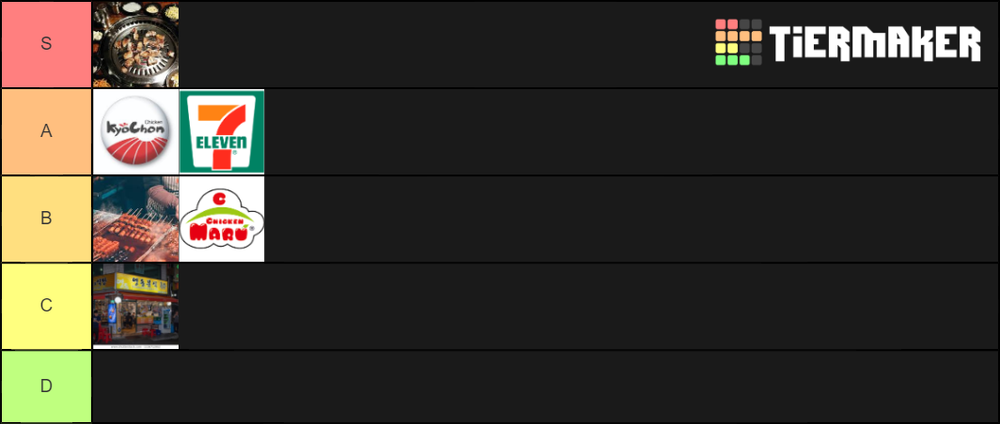

note: BBQ Chicken not included because I didn't try it.
S-tier
The number one on my list is of course the korean barbecue (Specifically all you can eat). Whilst not very friendly to your wallet, it is definitely worth it to try at least twice!
A-tier
Kyochon chicken is one of the premier places to get your chicken in KR (really only rivaled by BBQ in popularity.
The chicken tastes great, the food bags are clean af and value-wise it's a better option than Korean Barbecue.
The second on this list is 7/11, not even a real restaurant but who needs that anyway. If you're looking at budget
Then 7/11 and it's counterpart GS25 are the budget kings. For the price of one bucket at Kyochon you could eat 12 unique instant noodles and still have a lot more instant noodles to try.
B-tier
Street vendors are your local source of streetfood in Seoul. You can eat lots of different snacks like Korean Pancakes, Rice cakes and of course more meat :)
If you really want to get stuffed only eating streetfood (you do you) then beware of not eating "spicy" food too much. Street vendors are more about quantity and less about quality.
I'd rather have a perfectly cooked instant noodle over a slightly burned pancake :*)
The second food-spot on the list is Chicken Maru. This is the place I ate chicken at the most and while the portions are bigger and less pricey I would never choose this over Kyochon or KBBQ.
Not much to say about it really. Convenient at times but not top-notch.
C-tier
Any other restaurant defaults into C-tier because there is no site or anything like that.